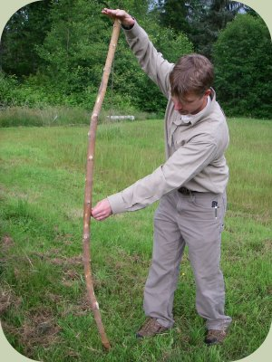
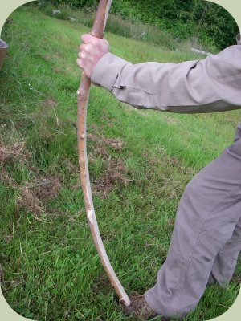
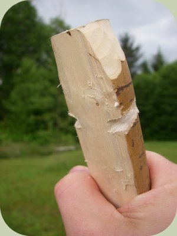
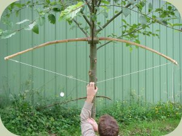
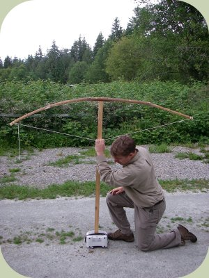

The following bow making instructions will help you construct an effective bow in a relatively short amount of time. A quickie bow is a fast-made bow for immediate use in a survival situation. It is carved from a sapling or branch of a tree.
The reason it is called a "quickie" bow is because it is made at the time the wood is harvested, rather than waiting a year or more for the wood to season (as is typical for regular bow construction). The advantage of this bow is that it is ready to use right away. The disadvantage is that the quickie bow may break or crack as it dries out over the months after construction. Regardless, a quickie bow can often become an effective long-term bow by caring for it as it dries out over the course of a few months.
Survival Bow Making Instructions:
The first step is to select the proper materials. Some of the best woods for making bows include osage orange, yew, ash, black locust, and hickory, though most hardwoods can work (other examples of hardwoods include oak, maple, and beech).
For a quickie bow, you want to start with a relatively straight section of sapling or branch that is free of knots, side branches, and twists. You want this straight section to be about 5 feet long and about 1.5 to 2 inches in diameter. Cut the sapling or branch carefully so not to create cracks or splits in the wood. This is your bow stave.
Stand the bow stave upright on the ground, hold the top loosely with one hand, and push outward lightly on the middle of the bow. The stave will swivel to show you which way it is slightly curved. The outside bend of the curve is called the "back" and the inside bend of the curve is the "belly". Leave the "back" of the bow untouched. The back receives the most tension and any damage to it can cause the bow to break. This is one of the most important bow making instructions.
Now find the middle point of the stave and mark out your handhold area by measuring and marking 3 inches out from the center in both directions. The handhold area will also be left relatively untouched. The area above the handhold is the upper limb and the area below is the lower limb.

Lightly pushing on the center, while allowing the stave to swivel, to find the back and belly of the bow
Now put the bottom tip of the bow on top of your foot and hold the top tip while pushing outward from the belly side of the handhold. Only push outward a few inches. Look at how the limbs bend. Observe which areas bend and which areas do not. Begin removing wood with a knife from the belly of the limbs where they do not bend while leaving material in the areas of the limbs that bend a lot. Remember: only remove wood from the belly side of the limbs, leave the back untouched. The goal at this step in the process is to get the limbs to bend evenly in the shape of a parabolic curve (like a satellite dish) throughout their entire length.
Take off material slowly and re-check the bend of the limbs frequently. The handhold and tips should stay straight or have very little bend. You are ready for the next step of bow making instructions once both limbs are no longer stiff and are able to flex evenly throughout their length – thick staves will take lots of carving, while narrow diameter staves may only need very little shaping.

Checking the curvature of the limb for shaping
You can now carve small notches on the both sides of each tip, being careful not to carve into the back of the bow. They only need to be deep enough to keep a bow string in place. Tie loops into both ends of a nylon, sinew, or plant fiber string, using a length that will allow there to be 5 to 6 inches between the string and the handhold when the bow is strung. String the bow; though be careful not to pull back on the string yet (doing so can break the bow). Now you're ready for the next bow making instructions.

Notches for the bow string
Hang the bow up horizontally on a branch or piece of scrap wood by the handhold. Now pull down a few inches on the string while observing how the limbs bend. Now, not only do you want each limb to bend evenly throughout its length, you also want each limb to bend exactly the same amount (a mirror image of each other). Tillering is also one of the most important bow making instructions.
Observe which limb bends less and carefully remove more materials from the belly of that limb until both limbs bend equally and evenly. Re-check frequently, pulling down on the string a little bit further each time until you are able to pull it to your draw length (Your draw length can be measured by imagining to hold a bow and pull the string back to your upper jaw to a shooting position – the distance between the handhold and your upper jaw is your draw length).

Checking the tiller
The tillering process is complete once both limbs flex equally and evenly and the draw weight (pounds of pressure required to pull the string back to a full draw) is at your desired poundage. A 25 to 35 pound draw is sufficient enough for hunting small game while 40 to 60 pounds is needed for larger animals like deer.
The poundage can be tested by placing a five foot 2x4 piece of lumber vertically on a bathroom scale, then balancing the bow horizontally by the handhold on top of the piece of lumber and pulling down on the string to a full draw length. The scale will register the draw weight.

Testing the draw weight
For wilderness survival situations the bow can now be used as is. Be sure to never "dry" fire the bow (dry firing is when the string is pulled back and let go without an arrow). This can break a bow. To finish it off you can sand the belly smooth and oil it with a light oil to prevent it from drying out too quickly. Many bowyers prefer linseed or tung oil. To care for your bow, shoot it and oil it frequently and adjust the tiller as needed. We hope you've found these bow making instructions helpful. Enjoy!